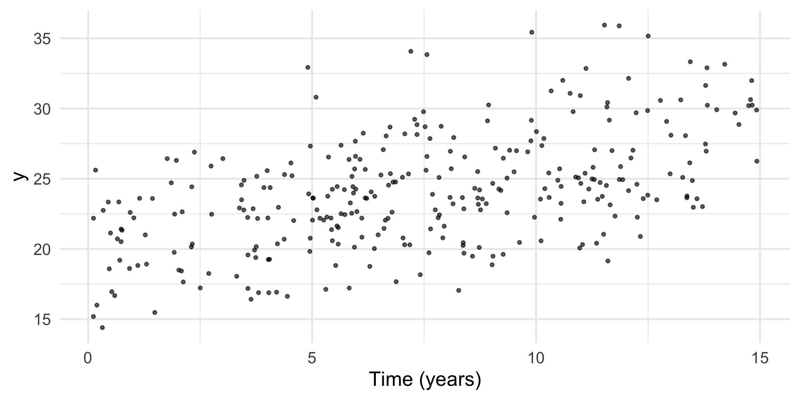
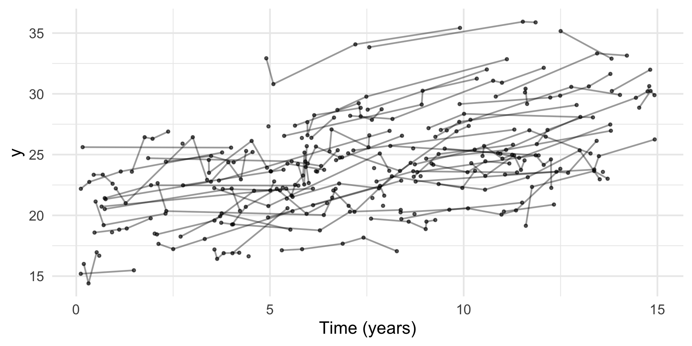
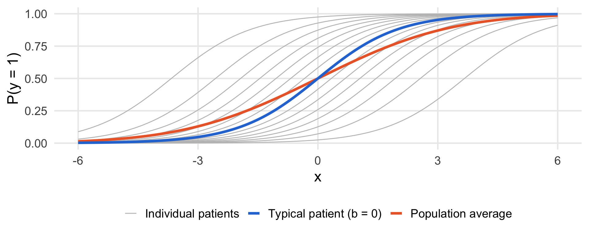
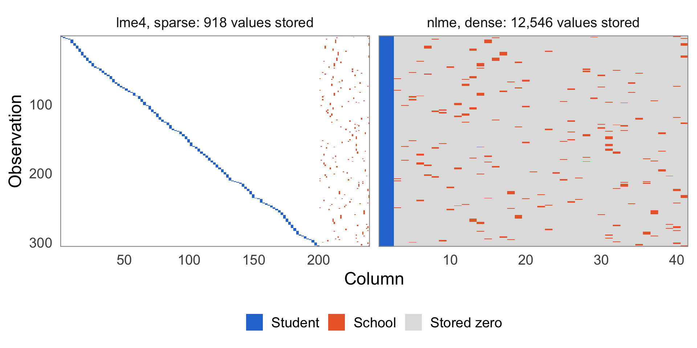
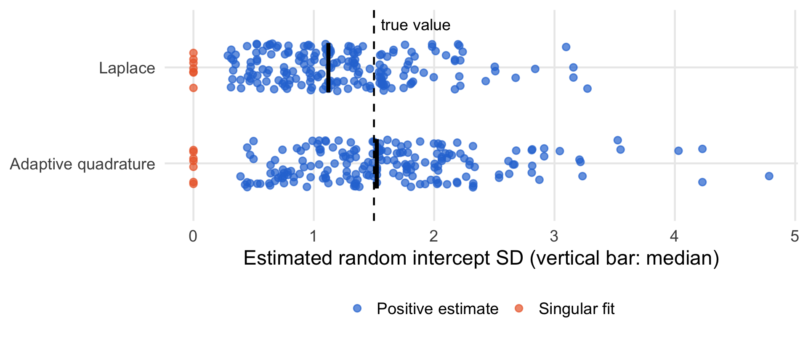

For \(i=1,\dots,m, j=1,\dots,n_{i}\):
\[ y_{ij} = \beta_{0} + b_{0i} + (\beta + b_{i}) x_{ij} + \epsilon_{ij} \]
in matrix form
\[ y = X \beta + Z b + \epsilon \]
\[ y = X \beta + Z b + \epsilon \]
\[ y = X \beta + Z b + \epsilon \]
Given \(b \sim N(0, G)\) and \(\epsilon \sim N(0, \sigma^{2} I)\), \(\hat{\beta}\) and \(\hat{b}\) solve the penalized least squares problem
\[ \min_{\beta,\, b} \; \lVert y - X\beta - Zb \rVert^{2} + \sigma^{2}\, b^{T} G^{-1} b \]
Henderson’s mixed model equations (Henderson 1975)
\[ \begin{bmatrix} X^{T}X & X^{T}Z \\ Z^{T}X & Z^{T}Z + \sigma^{2} G^{-1} \end{bmatrix} \begin{bmatrix} \hat{\beta} \\ \hat{b} \end{bmatrix} = \begin{bmatrix} X^{T}y \\ Z^{T}y \end{bmatrix} \]
Integrate out the random effects
\[ L(\beta, \sigma^{2}, G) = \int_{\mathbb{R}^{q}} \underbrace{p(y \mid b;\, \beta, \sigma^{2})}_{N(X\beta + Zb,\; \sigma^{2} I)}\, \underbrace{p(b;\, G)}_{N(0,\; G)} \; \mathrm{d}b \]
Closed form: \(y \sim N(X\beta,\, ZGZ^{T} + \sigma^{2} I)\)
With one grouping factor, the likelihood is a product over participants
\[ L(\beta, \sigma^{2}, G) = \prod_{i=1}^{m} \int p(y_{i} \mid b_{i};\, \beta, \sigma^{2})\, p(b_{i};\, G)\, \mathrm{d}b_{i} \]
with \(y_{i}\) the \(n_{i} \geq 1\) observations participant \(i\) has
lmer() drops those rows, losing their observed \(y\), so multiple imputation may be neededWith \(\theta = (\sigma^{2}, G)\) and \(V_{\theta} = ZGZ^{T} + \sigma^{2} I\)
\[ \begin{aligned} &-2 \ell_{\text{ML}}(\beta, \theta) = \\ & n \log 2\pi + \log \lvert V_{\theta} \rvert + (y - X\beta)^{T} V_{\theta}^{-1} (y - X\beta) \end{aligned} \]
For given \(\theta\), the maximizer over \(\beta\) is the GLS estimate
\[ \hat{\beta}_{\theta} = \left(X^{T} V_{\theta}^{-1} X\right)^{-1} X^{T} V_{\theta}^{-1} y \]
Integrate out \(\beta\) too (Harville 1974)
\[ L_{\text{REML}}(\theta) = \int_{\mathbb{R}^{p}} L(\beta, \theta) \, \mathrm{d}\beta \]
\[ \begin{aligned} & -2 \ell_{\text{REML}}(\theta) = \\ &-2 \ell_{\text{ML}}(\hat{\beta}_{\theta}, \theta) + \log \lvert X^{T} V_{\theta}^{-1} X \rvert - p \log 2\pi \end{aligned} \]
REML likelihoods are not comparable
anova() in lme4 refits REML models with ML automaticallyFixed effects
lmer() reports no p-values: with unbalanced data the null distribution of the \(t\) statistic, and its degrees of freedom, are not known exactlylmerTest) or Kenward–Roger (pbkrtest) degrees of freedom, based on REML (Kenward and Roger 1997)Confidence intervals
confint(mod) gives profile likelihood intervals, also for the standard deviations and correlations; Wald intervals are poor for variance parametersconfint(mod, method = "boot").Is there a random slope for \(x\)? Same fixed effects, so REML is fine
\(y\) distributed according to an exponential family with mean \(\mu\), and linear predictor
\[ g(\mu) = \eta = X \beta + Z b \]
Integral no longer known
\[ L(\beta, \phi, G) = \int_{\mathbb{R}^{q}} \underbrace{p(y \mid b;\, \beta, \phi)}_{\text{exp. fam.}}\, \underbrace{p(b;\, G)}_{N(0,\; G)} \; \mathrm{d}b \]
MASS::glmmPQL().lme4::glmer() and glmmTMB::glmmTMB().Write the integrand as \(e^{h(b)}\), with
\[ h(b) = \log p(y \mid b;\, \beta, \phi) + \log p(b;\, G) \]
Second-order Taylor expansion of the exponent around the mode \(\hat{b}\), where \(\nabla h(\hat{b}) = 0\):
\[ h(b) \approx h(\hat{b}) - \frac{1}{2} (b - \hat{b})^{T} H (b - \hat{b}) \]
with \(H = -\nabla^{2} h(\hat{b}) = Z^{T} W Z + G^{-1}\) and \(W\) the diagonal GLM weights at \(\hat{b}\)
The integrand is now a Gaussian kernel
\[ \begin{aligned} L(\beta, \phi, G) &\approx e^{h(\hat{b})} \int_{\mathbb{R}^{q}} e^{-\frac{1}{2} (b - \hat{b})^{T} H (b - \hat{b})} \, \mathrm{d}b \\ &= e^{h(\hat{b})} \, (2\pi)^{q/2} \, \lvert H \rvert^{-1/2} \end{aligned} \]
Taking \(-2 \log\):
\[ \begin{aligned} -2 \ell(\beta, \phi, G) \approx\; & \underbrace{-2 \log p(y \mid \hat{b};\, \beta, \phi) + \hat{b}^{T} G^{-1} \hat{b}}_{\text{penalized deviance}} \\ & + \log \lvert G \rvert + \log \lvert Z^{T} W Z + G^{-1} \rvert \end{aligned} \]
For the LMM, \(h(b)\) is exactly quadratic in \(b\), so the formula is exact, with
\[ -2 \log p(y \mid \hat{b};\, \beta, \sigma^{2}) = n \log 2\pi\sigma^{2} + \frac{\lVert y - X\beta - Z\hat{b} \rVert^{2} }{\sigma^{2}} \]
\(W = I / \sigma^{2}\), and \(\hat{b}\) the penalized least squares solution from before
Penalized iteratively reweighted least squares (PIRLS) for given \(\beta\), \(G\), from \(b^{(0)} = 0\):
\[ E(y \mid b) = g^{-1}(X\beta + Zb), \qquad E(y) = \int g^{-1}(X\beta + Zb)\, p(b)\, \mathrm{d}b \neq g^{-1}(X\beta) \]

Random intercept \(b \sim N(0, \sigma_{b}^{2})\), linear predictor \(\eta = x^{T}\beta\), and \(\varepsilon \sim N(0, 1)\) independent of \(b\)
Population-averaged effect with Probit:
\[ E\{\Phi(\eta + b)\} = P(\varepsilon - b \leq \eta) = \Phi\left(\eta \big/ \sqrt{1 + \sigma_{b}^{2}}\right) \]
Logit, approximate, using \(\operatorname{logit}^{-1}(t) \approx \Phi(t / 1.7)\):
\[ E\{\operatorname{logit}^{-1}(\eta + b)\} \approx \operatorname{logit}^{-1}\left(\eta \big/ \sqrt{1 + 0.346\, \sigma_{b}^{2}}\right) \]
Imagine we follow students over time, nested within schools, and that students may change school.

lme4 (Bates et al. 2015): sparse matrices; Laplace approximation; probably the fastest?glmmTMB (Brooks et al. 2017): sparse matrices; Laplace approximation; automatic differentiation; easily handles lots of different distributions.brms (Bürkner 2017): lme4 syntax; Stan backend; generates Stan code; very flexible.nlme: historically important; maintained but not actively developed.boundary (singular) fit: see help('isSingular')
Henderson’s equations need \(G^{-1}\), which then does not exist. lme4 instead writes \(b = \Lambda_{\theta} u\) with \(u \sim N(0, \sigma^{2} I)\) (Bates et al. 2015)
\[ \min_{\beta,\, u} \; \lVert y - X\beta - Z\Lambda_{\theta} u \rVert^{2} + \lVert u \rVert^{2} \]
so a singular \(\Lambda_{\theta}\) causes no problems
Model failed to converge with max|grad| = 0.006 (tol = 0.002)
?lme4::convergence)allFit(mod) refits with all available optimizers; if the estimates agree, report themModel is nearly unidentifiable: large eigenvalue ratio - Rescale variables?
40 patients with 2 binary measurements each, true random intercept SD 1.5, 200 simulated data sets

Laplace underestimates the SD (median 1.12 vs. 1.52 with quadrature). Singular fits occur with both methods (Laplace 4%, quadrature 4%): they come from the likelihood, not the approximation.
(x || id), or drop random slopesglmer(..., nAGQ = 25), available with a single random interceptbrms: the posterior shows the full uncertainty about the SD, instead of a point estimate at zero